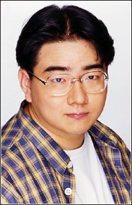

Shinichirou Oota is a Japanese voice actor. He is affiliated with Aoni Production.
- Gender: Male
- Birthday: March 21, 1971
- Hometown: Kanagawa, Japan
- Hobbies: Driving and Watching Soccer Games

|  |
Shinichirou Oota is a Japanese voice actor. He is affiliated with Aoni Production.
|
|---|
 |
Ryo Urawa | Sailor Moon | Ryo Urawa is a classmate of Ami Mizuno. He has feelings for Ami. Ryo has powers that allow him to see the future. |
Go Back to Main Page |
Go Back to Homepage |
|
|
|
OR |
|